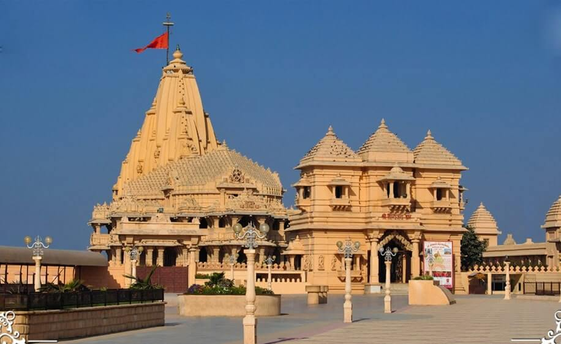

The intricately carved honey-coloured Somnath temple on the western edge of the state is believed to be the place where the first of the twelve holy jyotirlingas emerged in India - a spot where Shiva appeared as a fiery column of light. The temples lies at the meeting of Kapila, Hiran and Sarasvati rivers and the waves of the Arabian Sea ebb and flow touching the shore on which it is constructed. The ancient temple's timeline can be traced from 649 BC but is believed to be older than that. The present form was reconstructed in 1951. Colourful dioramas of the Shiva story line the north side of the temple garden, though it's hard to see them through the hazy glass. A one-hour sound-and-light show in Amitabh Bachchan's baritone highlights the temple nightly at 7.45pm.
Brief History
It's said that Somraj (the moon god) first built a temple in Somnath, made of gold; this was rebuilt by Ravana in silver, by Krishna in wood and by Bhimdev in stone. The current serene, symmetrical structure was built to traditional designs on the original coastal site: it's painted a creamy colour and boasts a little fine sculpture. The large, black Shiva lingam at its heart is one of the 12 most sacred Shiva shrines, known as jyotirlinga.
A description of the temple by Al-Biruni, an Arab traveller, was so glowing that it prompted a visit in 1024 by a most unwelcome tourist - the legendary looter Mahmud of Ghazni from Afghanistan. At that time, the temple was so wealthy that it had 300 musicians, 500 dancing girls and even 300 barbers. Mahmud of Ghazni took the town and temple after a two-day battle in which it's said 70,000 defenders died. Having stripped the temple of its fabulous wealth, Mahmud destroyed it. So began a pattern of destruction and rebuilding that continued forcenturies. The temple was again razed in 1297, 1394 and finally in 1706 by Aurangzeb, the Mughal ruler. After that, the temple wasn't rebuilt until 1950.
Best Time to Visit
The best time to visit Somnath Temple is in the cooler months of October to February, though the site is open all through the year. Shivratri (usually in February or March) and Kartik Purnima (close to Diwali) are celebrated with great enthusiasm here.

How to Get There?
By Road
The temple city lies 82 km from Junagadh, 270 km from Bhavnagar and 120 km from Porbandar. Ahmedabad is just 400 km away from Somnath.
By Train
Somnath is the nearest railway station, is well connected to other major towns in Gujarat and India.
By Air
Porbandar Airport is 120 km and Rajkot airport is 200 km away.